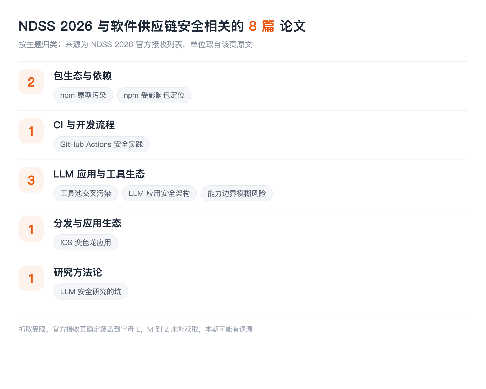

本文看点
01
8篇供应链相关论文
02
npm老问题仍在被硬啃
03
工具池污染是新一类
01
LIST INFO
本期说明
【会议】NDSS 2026，网络与分布式系统安全研讨会，2026 年 2 月 23 至 27 日，美国圣迭戈
【来源】NDSS 2026 官方接收论文列表，全会共接收 265 篇
【口径】只收与软件供应链安全直接相关的：包与依赖、CI 与开发流程、组件与工具生态、分发。固件漏洞挖掘、反编译、模糊测试这些不收

— NDSS 2026 供应链相关论文的主题分布
先说这一期最大的局限：抓取工具对 NDSS 那个长列表有长度上限，内容到字母 L 就被截断了，反复试过也绕不过去。所以这一期确定覆盖 A 到 L，M 之后的部分没能获取，很可能有遗漏。这个坑和 ASE 那期一样，索性都写在明面上。另外多数论文全文没读，介绍限制在标题能支撑的范围内，单位只在官方页给出时标注。
02
PKG
包生态与依赖
01
Bullseye: Detecting Prototype Pollution in NPM Packages with Proof of Concept Exploits
Tariq Houis, Shaoqi Jiang, Mohammad Mannan, Amr Youssef
Concordia University
检测 npm 包里的原型污染，而且要给出可执行的 PoC。原型污染是 JavaScript 生态特有的一类问题：污染一个共享的原型对象，影响面会顺着依赖树扩散到整个应用。带 PoC 这一点很关键，它把"疑似有问题"变成了"确实能打"，这正是大量供应链告警最缺的一步。
02
From Noise to Signal: Precisely Identify Affected Packages of Known Vulnerabilities in npm Ecosystem
Yingyuan Pu, Lingyun Ying, Yacong Gu
QI-ANXIN Technology Research Institute, Tsinghua University
精确定位 npm 生态里某个已知漏洞到底影响哪些包。标题里的"从噪声到信号"点明了痛点：漏洞情报给的影响范围往往过宽或过窄，下游拿到的是一堆真假混杂的告警。这和 ASE 那期"漏洞利用的跨版本适用性"是同一个问题的两端，一个从利用侧问、一个从依赖侧问。
03
CI
CI 与开发流程
03
Action Required: A Mixed-Methods Study of Security Practices in GitHub Actions
Yusuke Kubo, Fumihiro Kanei, Mitsuaki Akiyama, Takuro Wakai, Tatsuya Mori
04
AGENTS
LLM 应用与工具生态
04
Les Dissonances: Cross-Tool Harvesting and Polluting in Pool-of-Tools Empowered LLM Agents
Zichuan Li, Jian Cui, Xiaojing Liao, Luyi Xing
University of Illinois Urbana-Champaign
智能体挂着一池子工具时的跨工具窃取与污染。这篇的位置很有意思：单个工具可能都是良性的，风险出在它们被放进同一个池子共享上下文之后，一个工具能读到、甚至能污染另一个工具的数据。这是典型的组合风险，审计单个组件永远发现不了。本账号解读过 ColluSkill 那篇共谋技能链，讲的是同一类结构。
05
ACE: A Security Architecture for LLM-Integrated App Systems
Evan Li, Tushin Mallick, Evan Rose, William Robertson, Alina Oprea, Cristina Nita-Rotaru
Northeastern University
给 LLM 集成的应用系统设计安全架构。当应用把模型、插件、外部数据源接在一起，边界该划在哪、谁对谁授权，目前基本靠各家自己拍脑袋。这类工作是在补地基。
06
Beyond Jailbreak: Unveiling Risks in LLM Applications Arising from Blurred Capability Boundaries
Yunyi Zhang, Shibo Cui, Baojun Liu, Jingkai Yu, Min Zhang, Fan Shi, Han Zheng
05
DIST
分发与应用生态
07
CHAMELEOSCAN: Demystifying and Detecting iOS Chameleon Apps via LLM-Powered UI Exploration
Hongyu Lin, Yicheng Hu, Haitao Xu, Yanchen Lu, Mengxia Ren, Shuai Hao, Chuan Yue, Zhao Li, Fan Zhang, Yixin Jiang
06
METHOD
研究方法论
08
Chasing Shadows: Pitfalls in LLM Security Research
Jonathan Evertz, Niklas Risse, Nicolai Neuer, Andreas Müller, Philipp Normann, Gaetano Sapia, Srishti Gupta, David Pape, Soumya Shaw, Devansh Srivastav, Christian Wressnegger, Erwin Quiring, Thorsten Eisenhofer, Daniel Arp, Lea Schönherr
CISPA Helmholtz Center for Information Security, Max Planck Institute for Security and Privacy, Karlsruhe Institute of Technology, Ruhr University Bochum, TU Wien, Sapienza University of Rome
系统梳理 LLM 安全研究里的方法论陷阱。本账号已解读过，72 篇顶会论文篇篇踩坑、只有 15.7% 被作者自己察觉。放进这一期是因为供应链方向正在大量引入大模型做检测和分析，这些坑同样适用。
07
TAKEAWAYS
一点观察
npm 这条老线还在被硬啃，而且啃的是硬骨头。 两篇 npm 论文都不是"我们又做了个检测器"，一篇要给原型污染出可执行 PoC，一篇要把漏洞影响范围从噪声收敛成信号。这两件事的共同点是都在提高结论的可执行性：不是告诉你"可能有问题"，而是告诉你"确实能打"或者"确实影响你这个版本"。包生态研究做到今天，产出精确结论比产出更多告警更有价值。
工具池污染是这一期最新的一类。 智能体挂一池子工具已经是标准做法，而这篇说明风险可以从工具之间的组合里长出来，单个工具全是良性的也没用。这对现有的组件审计范式是个直接挑战：我们所有的扫描、签名、来源验证都是逐个制品做的，没有一样能表达"这两个组件放一起会出事"。
CI 是被严重低估的一段。 GitHub Actions 那篇提醒了一件事：CI 流水线握着发布权限，还大量引用第三方 action，它在结构上就是一条依赖链，但几乎没有人像审计 npm 依赖那样审计自己的 action 引用。这是目前性价比最高、却最少被认真做的一块。
最后说一句这一期的缺陷。 只覆盖到字母 L 是硬伤，M 之后的部分我没拿到。如果你手上有完整名单、发现遗漏了重要的，欢迎在留言区补，我会在后续更新里补进去。做盘点最怕的不是漏，是漏了还装作全了。